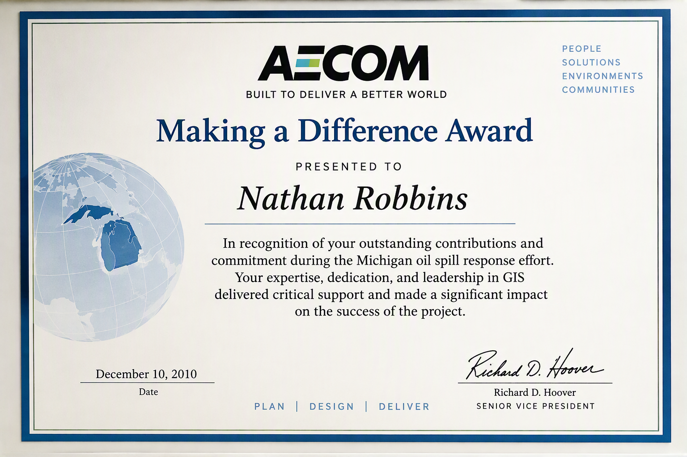

Recognition Gallery
The following awards, certificates of appreciation, and professional recognitions highlight contributions to enterprise GIS, geospatial innovation, technical leadership, and collaborative problem solving throughout my career.

Chief's Honor Award
U.S. Forest Service recognition for contributions to enterprise GIS solutions and geospatial innovation.

Certificate of Appreciation
Office of Sustainability and Climate recognition for Fireshed Risk Mapping and decision-support tools.

Technical Excellence Recognition
Support of the SERAL and ACCEL projects for Region 5 and Pacific Southwest Research Station.

Making a Difference Award
Recognition for GIS support during the Michigan oil spill response effort.